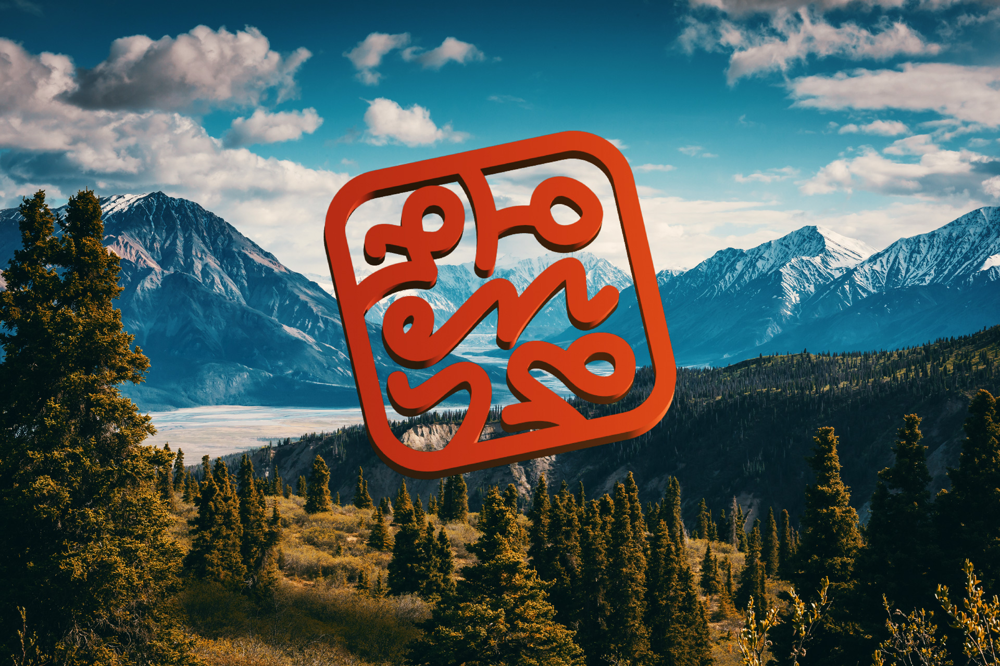

Art Practice
Художественная практика
Exploring communication, language, and meaning through conceptual art projects.
Исследование коммуникации, языка и смысла через концептуальные арт-проекты.
Artist Statement
Художественное высказывание
I work with language and writing as a medium. I construct reading situations where the viewer simultaneously recognizes and fails to recognize: can read — and yet cannot fully grasp the meaning. Through invented and existing sign systems, through “World Alphabet” and projects on the border of linguistics and visual art, I explore defamiliarization, the unknowable, and the ethics of perspective: how language becomes a measure of humanity and how the viewer's position changes when this measure ceases to function. My works are multilayered: they contain keys, references, memetic logic, syntactic glitches — and an invitation to inhabit a reality where the familiar suddenly becomes strange.
Я работаю языком и письменностью как медиумом. Я конструирую ситуации чтения, где зритель одновременно узнаёт и не узнаёт: может прочитать — и всё же не может полностью понять смысл. Через выдуманные и существующие системы знаков, через «мировой алфавит» и проекты на границе лингвистики и визуального искусства я исследую остранение, непознаваемое и этику взгляда: как язык становится мерой человечности и как меняется позиция зрителя, когда эта мера перестаёт работать. Мои работы многослойны: в них есть ключи, отсылки, меметическая логика, синтаксические сбои — и приглашение побыть в реальности, где знакомое внезапно становится странным.
Читать полное художественное высказывание →
Projects
Проекты
World Alphabet (2020 – Present)
Мировой алфавит (2020 – настоящее время)
A unified writing system that transcends cultural boundaries, developed through the observation of shared visual elements between Armenian and Hebrew scripts. The project explores how language shapes cultural identity and how visual commonality might bridge linguistic divides.
Единая система письменности, преодолевающая культурные границы, разработанная на основе наблюдения за общими визуальными элементами между армянским и еврейским письмом. Проект исследует, как язык формирует культурную идентичность и как визуальная общность может преодолеть лингвистические разделения.
Смотреть проект «Мировой алфавит» →
A — Apple (2021)
Я — Яблоко (2021)
My first personal exhibition featuring a series of paintings styled after alphabetical books and botanical illustrations. The works depict various apple varieties with names rendered in the World Alphabet script, exploring the apple as a default fruit in many cultures and languages while incorporating audio descriptions and sign language explainers.
Моя первая персональная выставка с серией картин в стиле азбук и ботанических иллюстраций. Работы изображают различные сорта яблок с названиями, написанными на Мировом алфавите, исследуя яблоко как «фрукт по умолчанию» во многих культурах и языках, а также включают аудиоописания и объяснения на языке жестов.
Смотреть выставку Я — Яблоко →
Medicine (2019)
Лекарства (2019)
A series of three object-based works that present folk and homeopathic remedies in the visual language of modern pharmaceutical products. The project includes encapsulated "tears dissolved in water" as a cure for depression, and a "lucky ticket" presented as a pill, questioning our relationship with medical authority and placebo effects.
Серия из трёх объектных работ, представляющих народные и гомеопатические средства на визуальном языке современных фармацевтических продуктов. Проект включает инкапсулированные «слёзы, растворённые в воде» как лекарство от депрессии, и «счастливый билет», представленный в виде таблетки, ставя под вопрос наши отношения с медицинским авторитетом и эффектом плацебо.